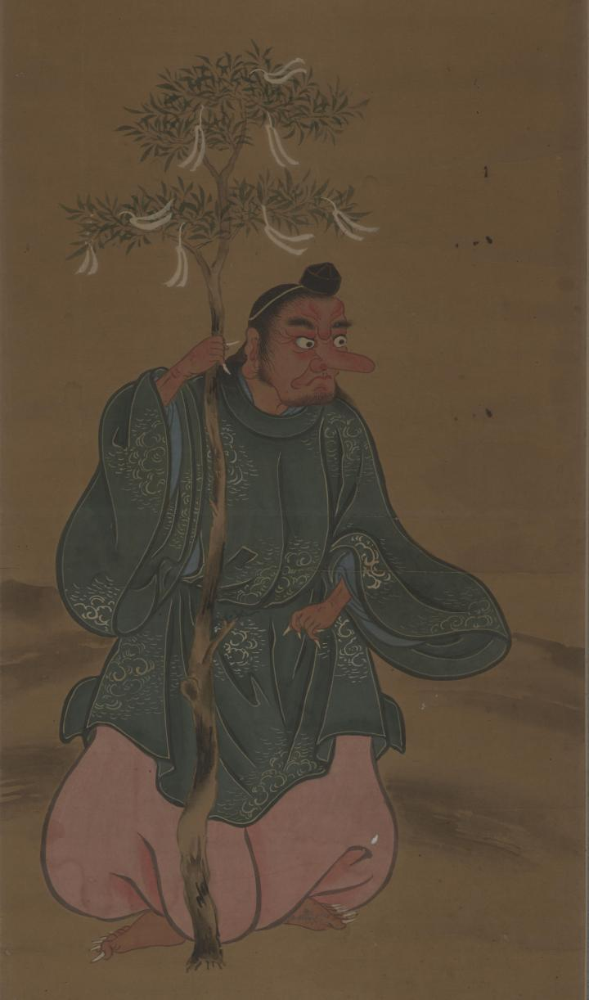

← 图鉴索引

着物を着た天狗が木の枝を持って立っている。
出典：親書誌：U426_nichibunken_0378：天狗図；テング ズ／日付：2014／資源識別子：U426_nichibunken_0378_0001_0000
Copyright (c)2010- International Research Center for Japanese Studies, Kyoto, Japan. All rights reserved.